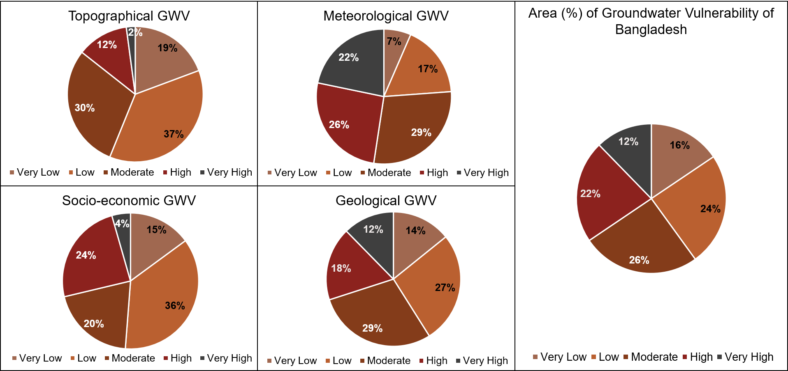

Authors
Saima Sekander Raisa, Showmitra Kumar Sarkar, Md. Ashhab Sadiq
Aim
To evaluate the spatial variability of groundwater vulnerability in Bangladesh using a multi-criteria, data-driven approach that incorporates environmental and socio-economic factors.
Summary
This study developed a comprehensive framework to assess groundwater vulnerability (GWV) across Bangladesh by integrating 22 factors into four themes (Topography, Meteorology, Socio-economy, and Land Use–Geology) and learning their contributions with a Random Forest model. Using 200 sample points and standardized rasters, the study produces category-wise and combined national GWV maps, highlighting high-risk zones and the drivers behind them.
Study Area
Bangladesh was selected as the study area due to its complex hydro-environmental conditions and rising groundwater challenges. Located in the Ganges–Brahmaputra–Meghna delta, the country spans about 143,998 km² and supports a population of around 171 million. Despite its riverine nature, increasing reliance on groundwater has created significant stress.
Groundwater vulnerability varies across regions, with coastal areas affected by salinity intrusion and northern regions influenced by hydrogeological and climatic factors. In major urban areas like Dhaka, rapid urbanization and population growth further intensify the issue. This study focuses on identifying vulnerable zones and the key drivers behind groundwater vulnerability.

Methodology
- Data Preparation: Derived 21 variables and grouped into four categories (Topographic, Meteorological, Socio-economic, and Land Use–Geological).
- Reference Indicator: Based on a prior groundwater potential study, 200 locations were selected nationwide and used in binary form (1 = vulnerable, 0 = non-vulnerable) to support index computation and model training.
- Model Development: Built a Random Forest model in Python (Spyder IDE) to evaluate variable importance.
- Spatial Mapping: Weighted indices were integrated in ArcMap using raster analysis to generate categorical and overall GWV maps of Bangladesh.
- Validation:Applied ROC Curve, AUC, and Cross-Validation metrics in Python for model accuracy assessment.

Topographic & Meteorological Factors
A total of 7 topographic factors and 4 meteorological factors were selected to assess topographic GWV and meteorological GWV.
| Topographic Factors | Meteorological Factors |
|---|---|
|
1. Slope 2. Roughness 3. Curvature 4. Drainage Density 5. Topographic Wetness Index 6. Topographic Position Index 7. Aspect |
1. Rainfall 2. Relative Humidity 3. Drought (SPI) 4. Land Surface Temperature |

Landuse-Geological & Socioeconomic Factors
A total of 6 landuse-geological factors and 4 socioeconomic factors were selected to assess landuse-geological GWV and socioeconomic GWV.
| Landuse-Geological Factors | Socioeconomic Factors |
|---|---|
|
1. Geology 2. Morphology 3. Soil Type 4. Lineament Density 5. Depth of Groundwater Level 6. Landuse/Land Cover (LULC) |
1. Population Density 2. Access to Tap Water 3. Access to Tubewell 4. Number of Industries |

Key Findings
- Topographic GWV: Topographic Position Index (TPI) is the dominant factor with 29% influence. High vulnerability occurs in the Chittagong Hill Tracts (southeast) and Barind Tract (northwest), while lower vulnerability spans parts of Rangpur, Mymensingh, Dhaka, Sylhet, and Barisal divisions. (Model Accuracy: 85%)
- Meteorological GWV: Rainfall is the key driver with 30% influence. High vulnerability is observed in parts of Dhaka, Rajshahi, and Khulna divisions, whereas lower vulnerability appears across the Chittagong Hill Tracts, Sylhet, Barisal, and Rangpur. (Model Accuracy: 86%)
- Land Use & Geological GWV: Soil type dominates with 31% influence. High vulnerability is found in parts of Dhaka, the Chittagong Hill Tracts, Barind Tract, and the Khulna coastal zone, whereas lower vulnerability occurs in Rangpur, Mymensingh, and parts of Chittagong and Khulna. (Accuracy: 89%)
- Socio-economic GWV: Access to tube wells is the most influential factor, contributing 40%. High vulnerability is concentrated around Dhaka and Comilla, while lower vulnerability extends across parts of Chittagong, Khulna, and Barisal divisions. (Model Accuracy: 88%)
- Overall GWV (Combined): Land use and geological factors show the strongest overall impact with 51% influence. High vulnerability includes parts of Dhaka and Khulna divisions, along with the Chittagong Hill Tracts and Barind Tract, while lower vulnerability is observed across Rangpur, Mymensingh, Barisal, and parts of Chittagong and Sylhet. (Model Accuracy: 91%)

Area Percentage of Groundwater Vulnerability
- Topographic GWV: Dominated by low vulnerability (37%), while very high vulnerability is minimal at just 2%, indicating relatively stable topographic influence across most areas.
- Meteorological GWV: Moderate vulnerability is most prominent (29%), whereas very low vulnerability accounts for only 7%, highlighting the strong impact of climatic variability.
- Landuse-geological GWV: Moderate vulnerability is highest (29%), with very high vulnerability at 12%, indicating notable but spatially varied geological influence.
- Socioeconomic GWV: Low vulnerability leads with 36%, while very high vulnerability remains limited (5%), suggesting comparatively lower stress from socio-economic factors.
- Overall GWV (Combined) The integrated assessment indicates a moderately stressed system, where moderate (26%) and low (24%) vulnerability dominate, while high vulnerability still represents a significant share (22%).
